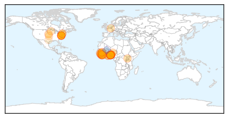
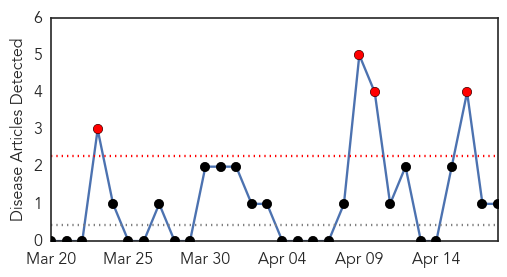
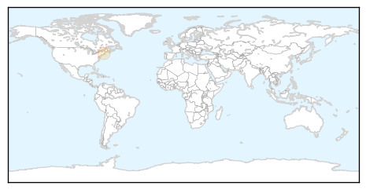

Ebola
30-Day Web Trend
0 alerts, 0 warnings
30-Day Twitter Trend
0 alerts, 0 warnings
Article Locations
Article Confidences
Top Articles:
- 1.000
- 16 U.S. Citizens Exposed to Ebola Virus Disease Show No Symptoms After Observation
- 1.000
- Liberia struggles with long Ebola 'to do' list
- 0.999
- Road to Redemption: How One Liberian Hospital is Recovering from Ebola
- 0.998
- WHO official says Ebola remains threat to Ghana
- 0.998
- Sudan Vision Daily
- 0.996
- SA nurse gives up job, risks life to care for ebola victims
- 0.995
- Ondo Strange Disease: Govt sets up emergency response teams, situation room
- 0.992
- Mystery illness kills 14 in SW Nigeria
- 0.992
- Ghana to have infectious disease centre
- 0.991
- As Ebola Cases Dwindle, West Africa Turns To Economic Recovery
- 0.991
- As Ebola Cases Dwindle, West Africa Turns To Economic Recovery
- 0.988
- U.S. government ships possible Ebola patients to hotels with no biohazard safeguards
- 0.983
- 700 Liberian Ebola workers protest for hazard pay
- 0.977
- Breaking News and Opinion Mareeg.com
- 0.977
- Mysterious disease kills Nigerian patients within a day
- 0.975
- Mysterious disease that kills patients within 24 hours leaves at least 18 dead in Nigeria
- 0.971
- `Mysterious` disease kills 17 in Nigeria: Official
- 0.970
- Ogun set up team to checkmate spread of mysterious death from Ondo
- 0.969
- 'Mysterious' disease kills 17 in Nigeria
- 0.968
- Rebuilding after Ebola
- 0.952
- Nigeria: 'Mysterious' disease kills 17 in southeastern town
- 0.950
- Turning the page on Ebola
- 0.950
- World Bank assists Guinea, Liberia and Sierra Leone
- 0.949
- Nigeria: Ebola, dengue, other infectious diseases ruled out as cause of #OndoX
- 0.942
- Strange Ondo Disease Linked To Exhumed Corpse
- 0.938
- Journey across Ebola-scarred Liberia - Liberia
- 0.934
- 17 succumb to ‘mystery’ disease that kills within 24 hours in Nigeria
- 0.930
- 'Mysterious' disease kills 17 in Ondo State
- 0.926
- Ebola hit West African nations seek 8 bn aid
- 0.922
- 'Mysterious' disease kills 18 in Nigeria: official
- 0.918
- Ondo Residents Flee As Death Toll Rises From Strange Disease
- 0.918
- 700 Liberian Ebola workers protest for hazard pay
- 0.907
- Mystery Illness Kills 17 in Southeastern Nigeria
- 0.895
- Sierra Leone News, This is Sierra Leone,All about Sierra Leone and Sierra Leone News
- 0.886
- Nigeria 'mystery disease' kills 18
- 0.882
- Brussels Airlines praised by Washington
- 0.858
- Liberia handover ceremony disrupted by angry workers
- 0.788
- Panic as Ondo unknown disease deaths hit 25
- 0.748
- Ebola crisis wanes, but relief efforts continue locally
- 0.736
- The Statesman: Ebola-hit nations call for 'Marshall Plan'
- 0.712
- World Bank to give USD 650 million to 3 African countries
- 0.678
- Ebola: $1 billion so far for a recovery plan for Guinea, Liberia, and Sierra Leone
- 0.620
- NewsReel 8/8/14 - Ebola: To Africa’s Shame
- 0.552
- Fiji Times Online
- 0.501
- Jovana Drinjakovic: The antibiotic crisis is at a tipping point
Top Tweets:
- 0.979
- Ondo Strange Disease: Victims test negative to Ebola, five other deadly diseases - Premium Times http://t.co/WCC0IQL9Cl ebola EVD
- 0.971
- As Ebola Cases Dwindle, West Africa Turns To Economic Recovery - NPR (blog) http://t.co/59bmWUzmdD ebola EVD
- 0.951
- WHO Leader Says End Of Ebola Outbreak Is Near, But Hard Work Remains - NPR http://t.co/Zdh6jCjGNY ebola EVD
- 0.915
- 7000 people, one clinic, no running water: Ebola and health systems:... http://t.co/d9yeLpwdhk
- 0.895
- Ebola crisis wanes, but relief efforts continue locally - St. Cloud Times http://t.co/QCeXHWzbid ebola EVD
- 0.819
- Guinea finds nine new Ebola cases near border with Sierra Leone:... http://t.co/U8lwNPqqLM
- 0.803
- 700 Liberian Ebola workers protest for hazard pay - Yahoo News http://t.co/bKkXlx5ZnS ebola EVD
- 0.785
- Médecins Sans Frontières: the organisation at the heart of the Ebola outbreak - http://t.co/9p21lKLIva http://t.co/VzzfXdJ4rz ebola EVD
- 0.713
- As Ebola Cases Dwindle, West Africa Turns To Economic Recovery - NPR (blog) http://t.co/HoKln90l63
- 0.592
- RT: How one chiefdom in SierraLeone avoided the Ebola epidemic http://t.co/6Do1ctJrgF
- 0.590
- Médecins Sans Frontières: the organisation at the heart of the Ebola outbreak http://t.co/2dlVmUe5KU
- 0.577
- Ebola orphans finally have something to cheer as kind donations allow them to ... - mir http://t.co/EEKDm5gXVp ebola EVD
- 0.556
- We’ll keep fighting Ebola until health systems are strengthened & future epidemics prevented. GlobalCitizenEarthDay http://t.co/73gVmUQlhu
- 0.519
- RT: MSF: the organisation at the heart of the Ebola outbreak http://t.co/N4jM81urP6
West Nile Virus
30-Day Web Trend
4 alerts, 0 warnings

30-Day Twitter Trend
0 alerts, 0 warnings

Article Locations
Article Confidences

Top Articles:
Top Tweets:
-
No tweets found for Apr 18, 2015